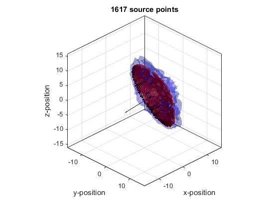

offGridBowl
Generate a non-binary mask for a bowl source on a 3D grid.
Syntax
mask = offGridBowl(kgrid, bowl_pos, radius, diameter, focus_pos)
mask = offGridBowl(kgrid, bowl_pos, radius, diameter, focus_pos, plot_bowl)
Description
offGridBowl computes a non-binary mask for implementing a bowl source in 3D simulations. It evenly samples the bowl using Fermat's spiral, and for each sample point computes a band-limited interpolant corresponding to a point source at that location. These point source responses are summed and scaled to give the source mask.
Examples
Nx = 32;
Ny = Nx;
Nz = Nx;
dx = 1;
dy = dx;
dz = dx;
kgrid = kWaveGrid(Nx, dx, Ny, dy, Nz, dz);
bowl_pos = [4, 4, 4];
radius = 15;
diameter = 21;
focus_pos = -bowl_pos;
plot_bowl = true;
mask = offGridBowl(kgrid, bowl_pos, radius, diameter, focus_pos, plot_bowl);
hold on
p = patch(isosurface(kgrid.y_vec, kgrid.x_vec, kgrid.z_vec, abs(mask), 0.5));
set(p, 'FaceAlpha', 0.5, 'FaceColor', 'red', 'EdgeColor', 'none');
p = patch(isosurface(kgrid.y_vec, kgrid.x_vec, kgrid.z_vec, abs(mask), 0.1));
set(p, 'FaceAlpha', 0.2, 'FaceColor', 'blue', 'EdgeColor', 'none');
camlight, lighting flat
set(gca, 'children', flipud(get(gca, 'children')))

Inputs
kgrid |
k-space grid structure returned by makeGrid containing Cartesian and k-space grid fields |
bowl_pos |
centre of the rear surface of the bowl given as a three element vector [bx, by, bz] [m] |
radius |
radius of curvature of the bowl [m] |
diameter |
aperture diameter of the bowl [m] |
focus_pos |
any point on the beam axis of the bowl given as a three element vector [fx, fy, fz] [m] |
Optional Inputs
plot_bowl |
boolean controlling whether the bowl sampling points are plotted (default = false) |
Outputs
mask |
3D non-binary source mask for a bowl |
See Also
makeArc,
makeMultiBowl